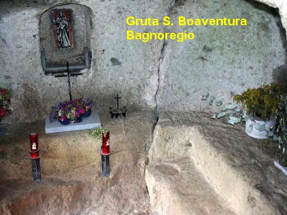
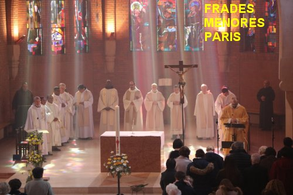
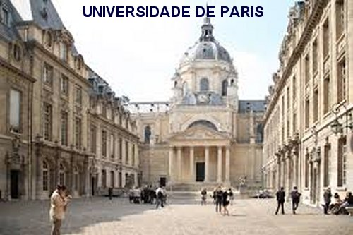
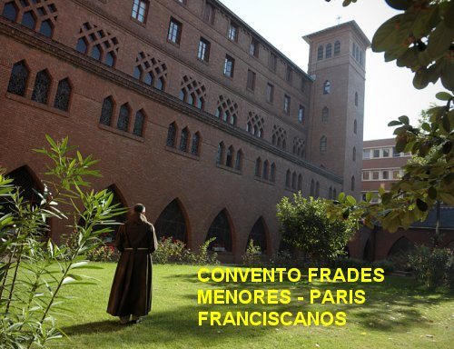

“SEGUNDO
FUNDADOR FRANCISCANO”
SEUS PAIS
E NASCIMENTO
Boaventura
nasceu de uma família nobre e opulenta em Civita de Bagnoregio, no centro da
Itália, entre Viterbo e Orvieto, no ano de 1221. Naquela época, aquela área
 pertencia ao domínio dos Papas. Seus pais se chamavam Giovanni
di Fidanza e Maria de Ritello. No dia do seu Batizado recebeu o nome de Giovanni
de Fidanza igual ao nome do seu pai, que era médico respeitado na região. Embora
fosse uma criança sadia e com muita vivacidade, na idade de 4 anos foi acometido
de grave doença, que deixaram seus pais extremamente preocupados, porque os recursos
para combater o mal naquela época eram escassos e difíceis. Então, sendo eles muito
religiosos e conhecendo as boas noticias sobre Francisco, o “poverello” (pobrezinho)
de Assis, rezaram e suplicaram a intercessão dele junto a DEUS, no sentido de
obter a cura do filho. No dia seguinte, quando o pai retornou do trabalho, a
esposa levou-o para ver o menino que ainda estava deitado. Ele teve uma imensa
surpresa e grande alegria, ao constatar que a criança estava totalmente curada,
e então, num gesto simples e espontâneo de agradecimento, falou:
“Oh! Buona ventura!” Expressão casual, mas que permaneceu no
gosto da família e colocaram no menino o apelido de: “Boaventura”. E assim, na intimidade do lar a criança carinhosamente
era sempre denominada com aquele apelido que o pai havia colocado. Em 1243 na
França, quando ele entrou na Ordem dos Frades Menores Franciscanos, e devia
escolher um nome para sua existência religiosa, substituiu definitivamente
o seu nome de Batismo Giovanni por Boaventura.
pertencia ao domínio dos Papas. Seus pais se chamavam Giovanni
di Fidanza e Maria de Ritello. No dia do seu Batizado recebeu o nome de Giovanni
de Fidanza igual ao nome do seu pai, que era médico respeitado na região. Embora
fosse uma criança sadia e com muita vivacidade, na idade de 4 anos foi acometido
de grave doença, que deixaram seus pais extremamente preocupados, porque os recursos
para combater o mal naquela época eram escassos e difíceis. Então, sendo eles muito
religiosos e conhecendo as boas noticias sobre Francisco, o “poverello” (pobrezinho)
de Assis, rezaram e suplicaram a intercessão dele junto a DEUS, no sentido de
obter a cura do filho. No dia seguinte, quando o pai retornou do trabalho, a
esposa levou-o para ver o menino que ainda estava deitado. Ele teve uma imensa
surpresa e grande alegria, ao constatar que a criança estava totalmente curada,
e então, num gesto simples e espontâneo de agradecimento, falou:
“Oh! Buona ventura!” Expressão casual, mas que permaneceu no
gosto da família e colocaram no menino o apelido de: “Boaventura”. E assim, na intimidade do lar a criança carinhosamente
era sempre denominada com aquele apelido que o pai havia colocado. Em 1243 na
França, quando ele entrou na Ordem dos Frades Menores Franciscanos, e devia
escolher um nome para sua existência religiosa, substituiu definitivamente
o seu nome de Batismo Giovanni por Boaventura.
INÍCIO DOS
ESTUDOS

O menino
Giovanni iniciou os estudos no "Convento San Francesco Vecchio”, na
cidade de Bagnorégio. Justamente hoje, é um dos lugares mais venerados em Bagnoregio:
a "Grotta di San Bonaventura". Pois o local se transformou numa antiga tumba
com vista para o Vale, usada na Idade Média como Eremitério (Convento). Ali exatamente
existia um pequeno Mosteiro Franciscano (San Francesco Vecchio), que foi destruído por terremoto
em 1764, e do qual hoje restam apenas ruínas. Exatamente ali, em 1228 o menino começou os
seus estudos.
Na sequência dos anos, na época oportuna, seu
pai que era um profissional muito dedicado e interessado no progresso da família,
desejando propiciar ao filho uma sadia instrução, o enviou para a Sorbonne,
Universidade de Paris, no ano de 1235. Lá o jovem estudou Letras e Artes Liberais
(gramática, retórica, lógica, aritmética, geometria, astronomia e música). Revelou-se
um estudante sério, compenetrado e piedoso, que com louvor se tornou um “Mestre
de Artes” (Magister).
CHAMADO DA VOCAÇÃO
Na continuidade
matriculou-se nos Cursos de Teologia, Escrituras e Patrística Latina na
Universidade, tendo como professor o notável franciscano Alexandre Hales, que
era reconhecido e famoso Mestre por sua admirável didática. E como é natural,
ele, homem experiente na cátedra, observando as qualidades daquele jovem,
estimulou-o a entrar na Ordem dos Franciscanos Menores.
INGRESSOU
NA ORDEM FRANCISCANA
No ano 1243,
seduzido pelo ideal dos Frades Menores, Giovanni procurou o Convento Franciscano
em Paris. E mais tarde ele explicou as razões da sua escolha:
"Confesso
diante de DEUS, que a razão da minha escolha, foi à admiração que me fez amar a
vida do Beato Francisco de Assis, a qual se assemelha ao início e ao crescimento
da Igreja. A Igreja começou com simples pescadores e depois foi enriquecida por
doutores muito ilustres e sábios; a religião, ou seja, a família religiosa do
Beato Francisco, não foi estabelecida pela prudência dos homens, mas pela
Vontade de CRISTO."
Na Ordem
Franciscana, passou a usar definitivamente o nome de “Irmão Boaventura”
ou em Latim “Frater
Boaventura”, quando
então, teve
a oportunidade de revelar em plenitude as suas preciosas qualidades.
Por esta razão, o Superior da Ordem autorizou que ele continuasse com os estudos
na Universidade, inclusive objetivando alcançar o Mestrado em Teologia.
ORDENAÇÃO
PRESBITERAL
Irmão Boaventura
matriculou-se e continuou com o curso de Teologia na Universidade de Paris, onde
os Franciscanos ocupavam uma das 12 (doze) Cadeiras da
Faculdade de
Teologia, tendo agora como professor o dinâmico franciscano Jean de La Rochelle, que
sucedeu na cátedra Alexandre Hales, que faleceu em 1245.
Ao longo dos anos
em que estudou na Universidade teve preciosos colegas, e foi também contemporâneo
de São Tomás de Aquino e de Santo Alberto, denominado o Grande, com os quais
estabeleceu sólida amizade.
Concluído o Curso
de Teologia foi ordenado sacerdote. E para este dia Boaventura se preparou digna
e respeitosamente, com jejuns e orações, pois se achava indigno de tão grande
privilégio: “Ser um Sacerdote
do SENHOR”. Porque ele desejava
ardentemente servir sempre mais a DEUS, que tão benignamente lhe concedeu o dom da
própria vida, através dos seus pais. Sobretudo, ele estava consciente do seu desejo,
pois além das muitas graças e benefícios que o SENHOR derrama sobre os Presbíteros,
lhes concede muitos dons especiais, porque atuam em Nome de DEUS. Por exemplo: no
Confessionário perdoando os pecados dos fiéis, no exercício do Sacramento da Penitência
ou Confissão; na Celebração da Santa Missa, enseja a ação do DIVINO ESPÍRITO SANTO
que no momento da Consagração, transforma o pão e o vinho, em CORPO, SANGUE, ALMA
e DIVINDADE do próprio NOSSO SENHOR JESUS CRISTO, nosso DEUS e SENHOR, pelo fenômeno
da Transubstanciação. E de modo idêntico também em outras oportunidades, o
Sacerdote sempre cumpre a Missão determinada conforme a Vontade do SENHOR. No
final da cerimônia, o Padre Diretor da Ordem, cumprimentou-lhe com um
forte abraço, assim como recebeu os cumprimentos de todos os Irmãos presentes,
que lhe desejaram saúde e felicidades no cumprimento da missão sacerdotal,
encerrando de modo inesquecível a Cerimônia da sua Ordenação Sacerdotal.
EXERCITANDO O
MAGISTÉRIO

No
ano 1248 começou a ensinar na Universidade e a escrever comentários sobre os
Livros Sagrados. E desse modo, foi evoluindo na Sorbonne concretamente, como
estudante e professor, tanto que no ano 1253 já era o titular da Cadeira
Franciscana de Teologia na Universidade em Paris, substituindo o professor
Jean de La Rochelle que foi para outro setor.
De 1248 a 1257, o
Irmão Boaventura também escreveu obras teológicas e deu sermões. Sua palavra era
agradável e instrutiva. Do mesmo modo que falava as pessoas, ou as comunidades
religiosas, ele falava ao rei, ou ao clero, sempre se manifestando com a mesma
simplicidade, com perfeita clareza e fervorosa unção. Pregava com dignidade a
Palavra de DEUS. Por isso mesmo, no seu tempo foi proclamado como primeiro
Orador da Universidade.
Aconteceu também,
que neste mesmo período de anos (1248-1257), os membros da Universidade de Paris
se envolveram numa controvérsia violenta e injustificável, contra as Ordens
Mendicantes (dos franciscanos e dominicanos) numa disputa irracional entre
“Clero Secular”
e “os Mendicantes” das duas Ordens (Franciscana e Dominicana). Frei Boaventura e seu fraterno
amigo Frei Thomas de Aquino (Dominicano), por esse motivo, não puderam receber a
“licentia docenti”
do Mestrado, necessária para que
pudessem lecionar na Universidade; isto acontecia, muito embora eles já
tivessem concluído o Curso e terem sido admitidos como Mestres desde 1253; a
Universidade de Paris se recusava agregá-los ao magistério oficial da Universidade.
Chegaram ao ponto de questionar a autenticidade da vida consagrada das Ordens
Mendicantes (que teoricamente viviam de esmolas e não tinham uma renda fixa).
Para responder àqueles que questionavam a legitimidade dos Mendicantes tanto
da Ordem Franciscana como da Ordem Dominicana, Frei Boaventura escreveu dois
arrazoados bem argumentados intitulados: Perfeição Evangélica”
e “Apologia Pauperum”.
Neles demonstra que os Frades Menores,
por sua prática radical dos votos de pobreza, castidade e obediência, seguem exatamente
o ensinamento do próprio JESUS como se encontra na Sagrada Escritura. E com palavras
bem colocadas prova que aquela prática autenticava um comportamento objetivo e correto,
segundo a Vontade Divina. Então o conflito se acalmou, mas a Universidade não concedeu
o “Mestrado” com a
“licentia docenti” (licença
para ensinar). Então o Papa Alexandre IV decidiu intervir pessoalmente, inclusive
ameaçando de excomunhão os Diretores e Responsáveis pela Administração da
Universidade, se o Grau de Doutor em Teologia não fosse concedido ao Franciscano
Boaventura e ao Dominicano Thomas de Aquino, que já haviam concluído o Curso. Na
Universidade, por revolta e desobediência, foi condenado o irriquieto Guilherme
de Saint-Amour, principal adversário dos Mendicantes. E assim, sendo pressionados,
a Diretoria reconheceu oficialmente em 1257 que Boaventura e Thomas de Aquino,
eram Doutores e Mestres da Universidade Parisiense, dando-lhes os referidos
Diplomas com a licença para ensinar.
Todavia, é bom
se evidenciar que três anos antes, a fama de Frei Boaventura já tinha lhe valido
uma posição destacada, de palestrante sobre
“Os Quatro Livros de Sentenças”,
que era um profundo livro de teologia escrito pelo Bispo de Paris Dom Pedro Lombardo, o qual
foi um grande teólogo do século XII. Em poucas palavras, o Livro trata da “Fé Cristã”, com uma ampla análise institucional, visando demonstrar não
apenas como a “Fé socializa”,
mas como a “Crença”
pode “Instituir”,
alargando um imenso campo, inclusive
impulsionando a própria existência das pessoas.

ELE SEMPRE BUSCOU A GLORIA
DE DEUS E SUA SANTIFICAÇÃO
É importante evidenciar
que Boaventura nunca se dedicou ao trabalho sem primeiro invocar as luzes do ESPÍRITO SANTO.
Esse Espírito de Piedade dá aos seus escritos um calor e uma unção Divina tão
profunda e bela, que passaram a lhe chamar de o “Médico Seráfico”.
São Tomás de Aquino veio
um dia visitá-lo e lhe perguntou em quais livros ele traçava essa profunda doutrina que
era admirada nele. Boaventura mostrou-lhe alguns volumes: mas, seu amigo Tomás,
meio incrédulo, ficou só olhando para ele. Boaventura percebendo a atitude do seu amigo,
apontou para um Crucifixo que estava em sua mesa e disse:
"Esta é a única fonte
da minha doutrina; é nessas feridas sagradas que eu apago minhas luzes!"
ELEITO MINISTRO GERAL
DA ORDEM FRANCISCANA
Neste mesmo ano de
1257, João de Parma, que há dez anos era Ministro Geral dos Franciscanos, é
acusado por alguns Irmãos de assumir as heresias de Joaquim Herrera Flores, que
entre outras barbaridades afirmava que “a Igreja deveria renunciar a toda organização e estrutura hierárquica,
e ser liderada imediatamente pelo ESPÍRITO SANTO”. Sendo João Parma um conciliador nato, ele mesmo convocou
um Capítulo Geral extraordinário, onde renunciou ao cargo e propôs eleger o Irmão
Frei Boaventura para o seu lugar. O Capítulo concordou com a proposta e constituíram
representantes para levarem a notícia a Frei Boaventura, que se encontrava em
Paris.
Frei Boaventura
tinha 36 anos de idade, quando recebeu a notícia da sua eleição para Ministro
Geral dos Frades Menores. Inicialmente relutou em aceitar, pois
embora tivesse grande capacidade administrativa, a Ordem havia
desenvolvido de maneira prodigiosa em menos de meio século de existência. Naquela
época já contava com trinta mil membros, distribuídos em trinta e duas províncias,
desde a Suécia até o Egito, desde Portugal à Hungria, com postos missionários
no Oriente Médio e em lugares tão distantes como Pequim (na China). Mas, depois
pensando um segundo, corajosamente elevou os seus olhos aos Céus e aceitou o
sacrifício, dizendo aos enviados que aceitaria.
Depois da posse,
como primeiro ato, Consagrou a SANTÍSSIMA VIRGEM MARIA ao Governo da Ordem Franciscana.
Em seguida enviou a todos os franciscanos uma correspondência deixando-lhes cientes
da Consagração realizada, e despertando-lhes a consciência da necessidade, do respeito
e do dever de cumprirem rigorosamente esta determinação. Em seguida, viajou a Roma, para
se encontrar com o Papa Alexandre IV no Vaticano, a fim de lhe apresentar todos
os assuntos da Ordem Religiosa. Concluídos os trabalhos, visitou os
Conventos Franciscanos da região, se apresentado aos subordinados e
paternalmente colocando-se a disposição de todos.
E sempre trabalhando
muito, com seriedade e amor, durante dezessete anos, Boaventura exerceu essa função
com sabedoria e dedicação, visitando as províncias, escrevendo aos Irmãos, às vezes
intervindo com alguma severidade para eliminar abusos, mas primordialmente,
mantendo-se sempre presente de algum modo.
Neste mesmo ano de 1257,
Boaventura com todo o seu dinamismo e pulso forte teve que enfrentar
corajosamente aquela terrível disputa entre os irmãos da mesma Ordem Religiosa. Ou
seja, o entrevero de opiniões fortes entre os
“espirituais”, partidários da pobreza
absoluta, contra os “conventuais”,
aqueles que eram a favor e buscavam a boa evolução
da Ordem Religiosa, especialmente em relação à educação sobre todos os aspectos, inclusive
nas homilias para o povo e na catequese para jovens e adultos. Como era natural São
Boaventura condenou os “espirituais”
, especialmente os
denominados “joaquimistas”,
que se apoiavam nas estranhas teses sobre
a “re-invenção dos Direitos Humanos”
de Joaquim Herrera Flores. Por
outro lado, ele estimulou os
“conventuais” a continuarem
organizados e interessados no progresso material e espiritual dos Franciscanos.
Nesta época, os
Franciscanos, assim como os Dominicanos, já estavam estabelecidos nas principais
cidades européias: em Paris, Oxford, Cambridge, Estrasburgo e em outras universidades.
Mas é compreensível que esta evolução renovadora não aconteceu sem dificuldades,
e com muitas desconfianças. Isto porque, as pessoas da velha geração nos
Conventos e Mosteiros, consideravam que aquela ampliação e organização funcional
dos estudos, iam provocar um determinado afrouxamento da disciplina religiosa no
entendimento dos jovens frades. Irmão Boaventura, sempre buscando esclarecer as
dúvidas, usava palavras tranquilizadoras que evidenciavam com clareza a verdade
para os mais idosos, e estimulava a compreensão dos mais novos.
Certo dia, no Convento
Franciscano, Frei Egídio com sua natural simplicidade, lhe perguntou como
poderia alcançar a salvação, considerando que ele não conhecia a Teologia? Frei
Boaventura lhe respondeu:
“Como DEUS dá as pessoas a Graça de poder amá-LO, isso é o suficiente. Até uma
simples velhinha poderá amar a DEUS com maior intensidade do que um experiente
professor de teologia”.
Frei Egidio gostou da palavra de Boaventura e o abraçou fraternalmente.
Sempre com muita
inteligência e dotado de bom senso, Boaventura soube infundir no pensamento franciscano
os modos das novas gerações, acrescidas das exigências também no campo da cultura,
desmentindo concretamente as idéias contrárias que afirmavam que:
“a ciência ia causar dano
à simplicidade da regra franciscana”.
Em outubro de 1259,
desejando mergulhar no espírito de São Francisco de Assis, retirou-se para o Monte Alverne,
na Itália, onde o fundador São Francisco recebeu as Chagas de JESUS. Deste
retiro, nasceu o mais famoso dos escritos de Frei Boaventura:
“O itinerário do espírito em DEUS”,
um precioso manual de contemplação mística.
Então, torna-se evidente que a nomeação para Ministro Geral da Ordem Franciscana,
em nada lhe mudou os seus costumes. Apesar da multiplicidade de trabalhos apostólicos,
Boaventura nunca deixou de exercer humildes ofícios na vida comunitária nem interrompeu
os seus estudos. Sempre encontrava tempo para os exercícios de piedade, e também, nas
mais diversas atividades ele procurava manter-se num estado de recolhimento
interior.
As seguintes palavras
dele,
expressam bem o seu modo de proceder:
“Ninguém deve pensar que basta a leitura sem a unção, a especulação sem a
devoção, a investigação sem a admiração, a circunspecção sem a exultação, a
habilidade sem a piedade, a ciência sem a caridade, a inteligência sem a
humildade, o estudo sem a Graça Divina, o modelo sem a sabedoria inspirada.”

 PRÓXIMA PÁGINA
PRÓXIMA PÁGINA
RETORNA AO ÍNDICE